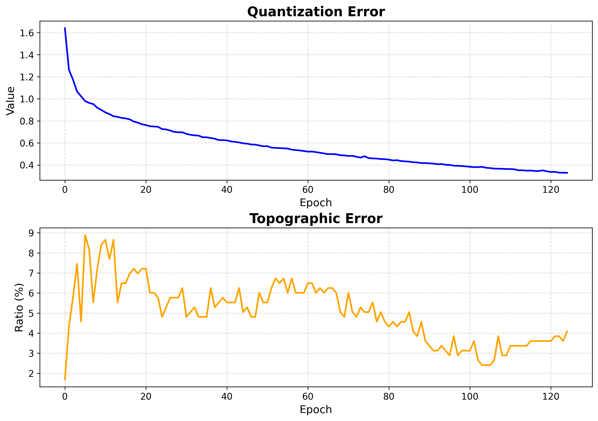

Boston Housing — Regression¶
The Boston Housing dataset (506 samples, 13 numeric features, one continuous target)
is a standard regression benchmark. The target MEDV is the median home value. This
tutorial trains a map, checks convergence, and reads the structure through the
U-matrix and hit map, then turns to the regression-specific views: the mean and std
target maps, the score map, and the rank map.
Note
Full runnable notebook: notebooks/boston_housing.ipynb. The figures below are its outputs.
1. Load and standardize the data¶
The dataset ships in the repo as a CSV. The features are every column except the last;
MEDV is the continuous target. The BMU search compares raw feature distances, so
standardizing the features is essential.
import torch
import pandas as pd
from sklearn.preprocessing import StandardScaler
# boston_housing.csv ships in the repo under data/notebooks/
df = pd.read_csv("data/notebooks/boston_housing.csv")
feature_df = df.iloc[:, :-1] # all columns except the last
target_series = df.iloc[:, -1] # last column: MEDV
features = torch.tensor(
StandardScaler().fit_transform(feature_df), dtype=torch.float32
)
targets = torch.tensor(target_series.values, dtype=torch.float32) # continuous
feature_names = list(feature_df.columns)
2. Train the SOM¶
from torchsom import SOM
som = SOM(
x=25,
y=15,
num_features=features.shape[1],
epochs=100,
batch_size=16,
sigma=1.45,
learning_rate=0.95,
neighborhood_order=3,
topology="rectangular",
initialization_mode="pca",
random_seed=42,
)
som.initialize_weights(data=features, mode=som.initialization_mode)
q_errors, t_errors = som.fit(data=features)
3. Check convergence¶
from torchsom import SOMVisualizer
viz = SOMVisualizer(som=som)
viz.plot_training_errors(
quantization_errors=q_errors, topographic_errors=t_errors
)

Both errors fall and flatten — training is long enough.
4. Map structure¶
The U-matrix exposes cluster boundaries; the hit map shows where the data lands.
viz.plot_distance_map(
distance_metric=som.distance_fn_name,
neighborhood_order=som.neighborhood_order,
)
viz.plot_hit_map(data=features)
5. Target landscape¶
Build the BMU→sample map once, then summarize the target over each neuron. The mean map is a smooth regression surface over the topology: neighboring neurons hold similar predicted values. The std map flags neurons whose mapped samples disagree on the target, marking regions where a single prediction is less trustworthy.
bmus_map = som.build_map("bmus_data", data=features)
viz.plot_metric_map(
bmus_data_map=bmus_map,
data=features,
target=targets,
reduction_parameter="mean",
)
viz.plot_metric_map(
bmus_data_map=bmus_map,
data=features,
target=targets,
reduction_parameter="std",
)

{kind=link}
{kind=link}
{kind=link}
{kind=link}
6. Per-neuron reliability¶
The score map combines target variance, sample count, and statistical significance into a single value where lower is better. The rank map orders neurons by std, so rank 1 is the lowest-std, most reliable neuron. Together they pinpoint which neurons give trustworthy regression estimates.
viz.plot_score_map(
bmus_data_map=bmus_map,
target=targets,
total_samples=features.shape[0],
)
viz.plot_rank_map(bmus_data_map=bmus_map, target=targets)

Next steps¶
Energy Efficiency — Multi-target Regression — Another regression example
Visualization Gallery — Every plot explained
Clustering — Group neurons into clusters